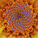
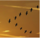
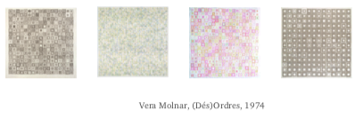

“Order is a prerequisite of survival; therefore the impulse to produce orderly arrangements is inbred by evolution.” From our humans’ perspective, the order is a suitable form that our human mind can easily understand. Rudolf Arnheim expressed his opinion in the book - Entropy and Art: An essay on disorder and order”, “order makes it possible to focus on what is alike and what is different, what belongs together and what is segregated.” We can use three elements to build order - arrangement, structure, and balance.
 I first analyzed the artwork of Vera Molnar and thought about whether I can develop my ideas based on his artwork. Then, I imagined dividing the processing canvas into a 20*20 grid and using lines or dots to randomly create disorder form in an ordered way.
